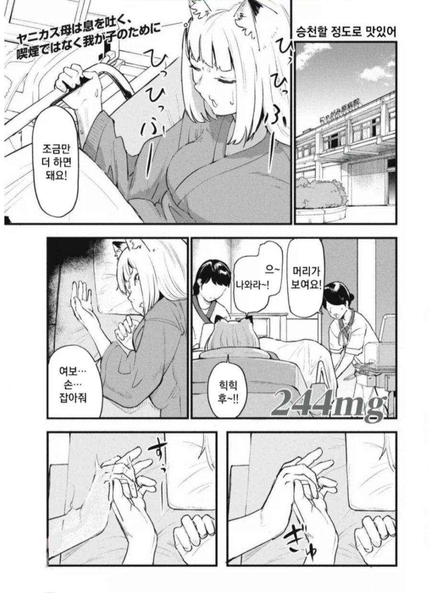
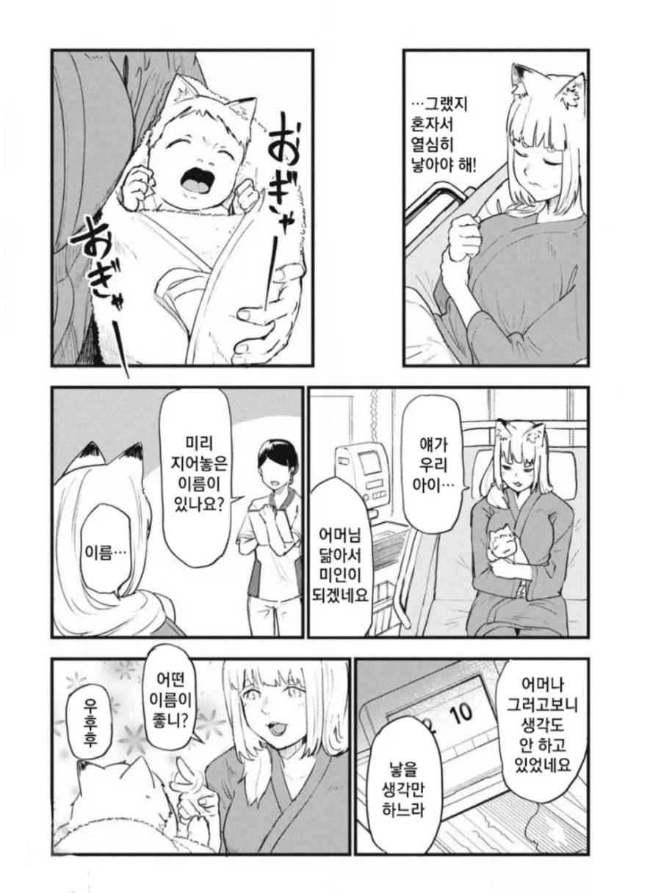
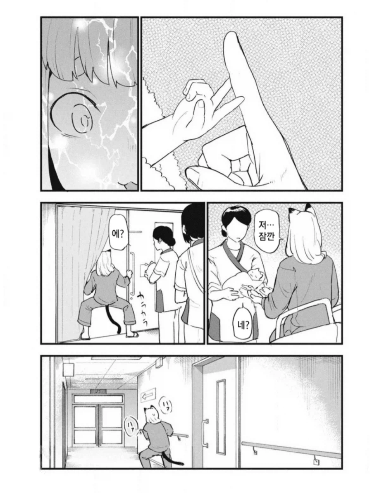
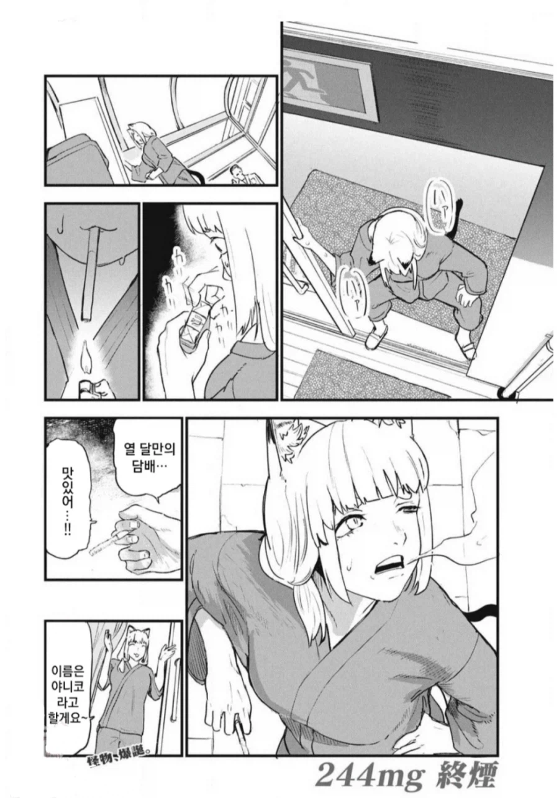

수인 종족 자체가 도파민 쫓는 종족인데 열 달이나 금연을...?
그 와중에 병실이나 병원 내부 아닌 흡연실에 어기적 거려서라도 가서 핀다고...?
보다보면 결혼할 만해서 결혼한 야니네코 엄마
사토 시즈에




수인 종족 자체가 도파민 쫓는 종족인데 열 달이나 금연을...?
그 와중에 병실이나 병원 내부 아닌 흡연실에 어기적 거려서라도 가서 핀다고...?
보다보면 결혼할 만해서 결혼한 야니네코 엄마
사토 시즈에
씨발 잠깐만 그럼 동생은...
수인하고 결혼하지 말라는 이유가 있다. 수인하고 결혼한 인간 남자는 오래 살지 못한다.
애낳자마자 담배빠는거 뭐냐 ㅋㅋ
애가 마렵게 하잖아
레전드종족임
남편이 죽은게 슬프네 ㅠㅠ
죽은거처럼 묘사되는 모양세지만 실제론 죽었다고 한번도 안나왔고
일단 나이차이가 나는 둘째가 있음
아빠가 집주인이 아니였다고?
아빠가 야니코 때 없었으먄 둘째는 애비는 누구냐
저거 구도 레옹 아니냐? ㅋㅋㅋㅋㅋㅋㅋ
수유는 포기했냐...
마더러시아는 산후조리란 단어가 없음
수인은 인간보다 약 8배 회복력과 근력이 있다고 나옴